覆盖体育、健康、教育、社会科学等领域，能够从采访、资料梳理到成稿发布完整推进。
About
关于我
我具备新闻采写、公众号运营、专题策划、数据复盘和视觉设计经验。曾参与湖北日报、南方都市报、realme、TCL 通讯等平台与企业项目，也独立完成过网页应用、海报、版面和 App 原型设计。
熟悉公众号选题、推文编辑、活动传播、用户画像与数据复盘，重视内容转化与反馈。
可完成海报、版面、App 原型、短视频剪辑与 AIGC 素材生成，兼顾信息层级和审美统一。
- 公众号运营
- 新闻采写
- 专题策划
- Excel / SQL
- Python
- Photoshop / Illustrator
- Premiere / 剪映
- Codex / Trae
- 即梦 / 可灵
Experience
实习经历
湖北日报
新媒体运营实习生
参与湖北日报相关媒体运营、杂志策划与数据复盘，跟进专题分析和稿件优化，支持内容发布后的效果评估。
realme
企业文化实习生
负责内部线上学习与培训平台运营，参与资料整理、封面制作、课程维护和关键岗位培训执行。
南方都市报
新媒体编辑实习生
结合热点与受众需求进行选题创意、采访写作和图文编辑，涉及健康、教育等方向，参与多篇公众号稿件产出。
TCL 通讯
媒资运营实习生
参与内容引进、专题策划与数据分析，围绕点击量、播放量、购买量等指标建立看板并跟进反馈。
Portfolio
作品集
作品覆盖个人网页应用、新闻稿件、公众号推文、海报设计、报刊版面、App 原型和视频剪辑。
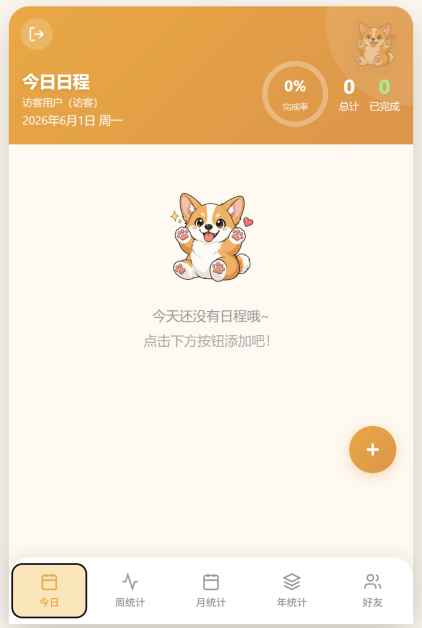
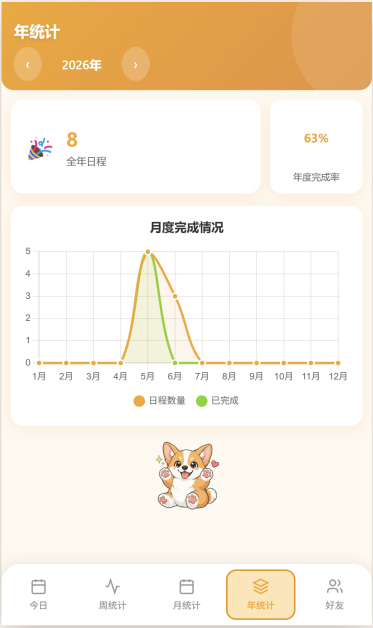
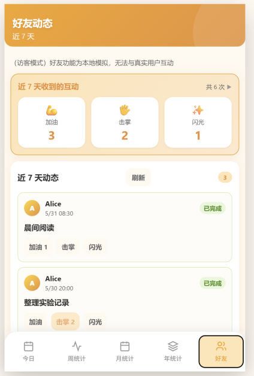
Writing
新闻稿件与公众号推送
曾为湖北日报、南都健闻、南都校探、樱花大道、深圳工程等平台参与稿件采写、编辑与发布。
湖北日报稿件
全民健身赛事、光明阅读、体育舞蹈、社会体育指导员公益行、真人图书分享会等。
南都健闻 / 南都校探
健康科普、医美查询工具、博物馆攻略、教育机构回应、校园活动征集等。
校园与企业公众号
心理健康节、民族共同体学习研讨、节日推送、荣誉喜报、主题团日活动等。
Poster Design
公众号海报设计
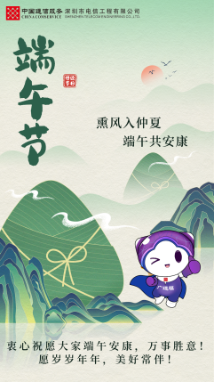
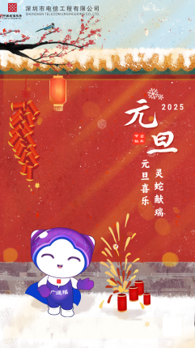
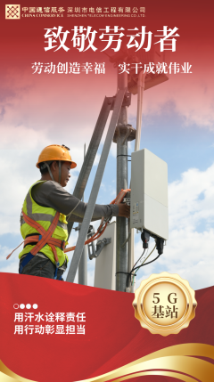
Editorial Layout
报纸与杂志版面设计
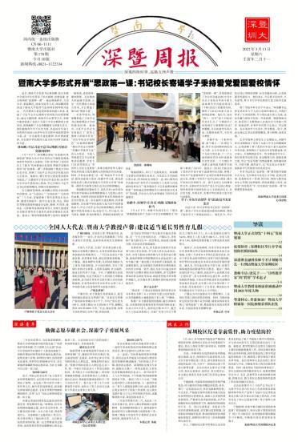
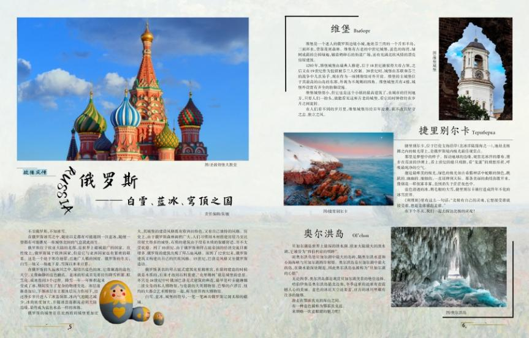
App Prototype
App 原型图设计
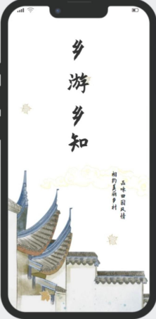
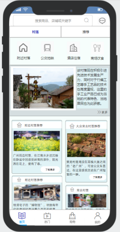
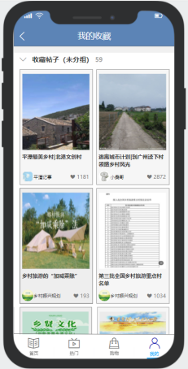
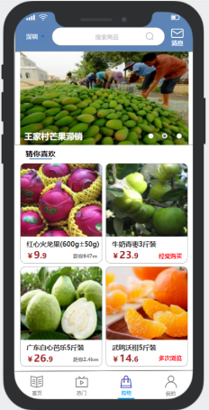
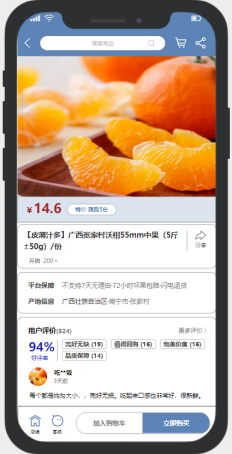
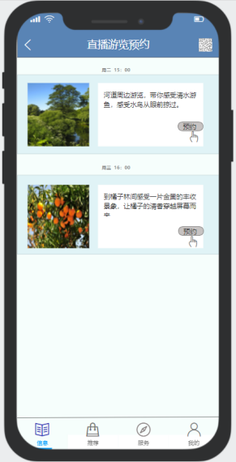
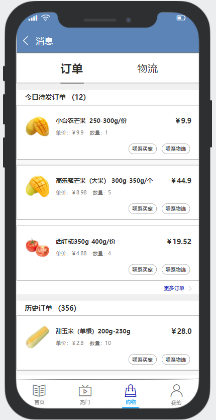
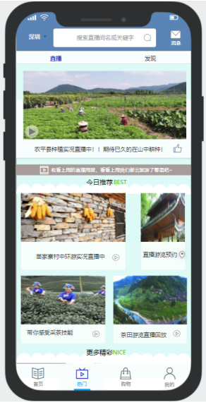
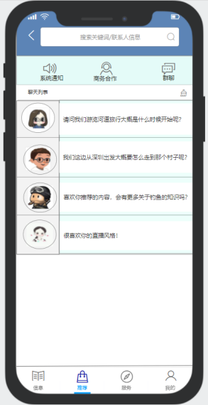
Video
视频制作作品集
熟练使用 Premiere、剪映等剪辑软件，也能使用即梦、可灵等 AIGC 视频工具完成素材生成与剪辑包装。
提取码：9285